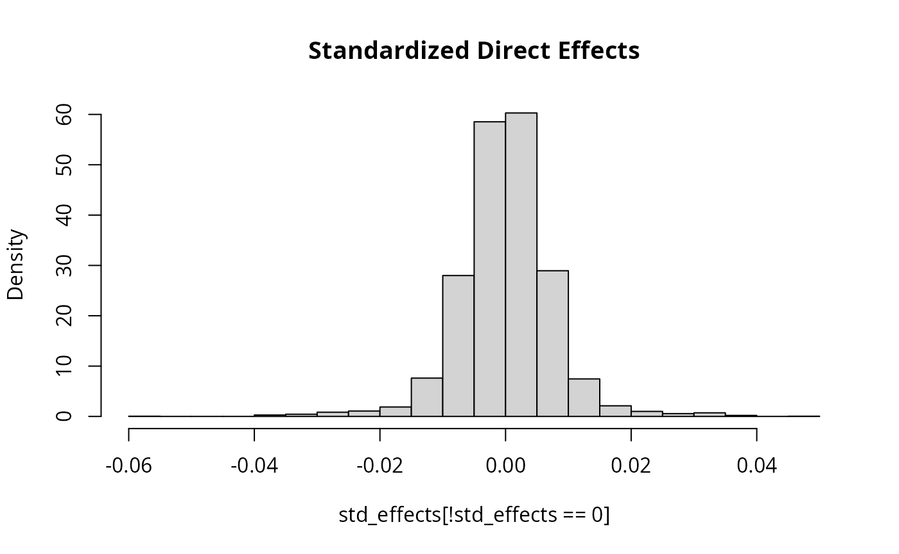

Controlling Effect Size Distributions
Source:vignettes/effect_distribution.Rmd
effect_distribution.Rmd
library(simGWAS)
library(dplyr)
#>
#> Attaching package: 'dplyr'
#> The following objects are masked from 'package:stats':
#>
#> filter, lag
#> The following objects are masked from 'package:base':
#>
#> intersect, setdiff, setequal, union
library(ggplot2)Introduction
simGWAS can support a range of effect size
distributions. At one end of the spectrum, effect sizes and direct
effect variants can be completely deterministic. At the other end of the
spectrum, both are random. There are multiple ways to control the
distributions of these random values demonstrated in this vigentte.
Default Behavior
The default behavior of sim_mv is to sample effect
variants randomly by first generating a \(J\)-vector \(Z_m
\sim Binom(1, \pi_m)\) for each trait, \(m\). \(Z_{m,j}\) is 1 if variant \(j\) has a direct effect on trait \(m\) and 0 otherwise. We then sample
standardized direct effects for variants with \(Z_{m,j} = 1\) from a mean-zero normal
distribution with variance, \(\sigma^2_m\), determined by the SEM and the
target expected heritability. This procedure results in effect variants
spread evenly throughout the genome and effect sizes that are inversely
proportional to \(\sqrt{2 f_j
(1-f_j)}\)
We demonstrate this by simulating data for only one trait.
set.seed(1)
sim_dat1 <- sim_mv(G = 1,
J = 50000,
N = 60000,
h2 = 0.3,
pi = 1000/50000,
af = function(n){rbeta(n, 1, 5)})
#> SNP effects provided for 50000 SNPs and 1 traits.
#> Warning in gen_bhat_from_b(b_joint_std = beta_std, trait_corr = trait_corr, :
#> trait_corr disregarded as there is no sample overlap.
plot(sim_dat1$direct_SNP_effects_joint)
plot(sim_dat1$snp_info$AF, sim_dat1$direct_SNP_effects_joint)
std_effects <- with(sim_dat1,
direct_SNP_effects_joint*sqrt(2*snp_info$AF*(1-snp_info$AF)))
hist(std_effects[!std_effects == 0], breaks = 30, freq = F,
main = "Standardized Direct Effects")
curve(dnorm(x, sd = sqrt(0.3/1000)), add = T)
Controlling Direct Effect Variants
To control which variants have direct effects, the pi
argument can be supplied as a J \times M matrix rather than
as a vector of length M or a scalar. If pi has
matrix format then pi[j,m] gives the probability than
variant j has a direct effect on trait m. To
make the set of direct effect variants fully deterministic, set the
values of pi to be either 0 or 1. Using pi in
matrix format is incompatible with options pi_exact = TRUE
and sporadic_pleiotropy = FALSE.
Below, we use the matrix format to force all effect variants to be in the first half of the genome. This strategy could be used to designate regions with high concentrations of effect variants.
pi_mat <- matrix(0, nrow = 50000, ncol = 1)
pi_mat[1:25000,1] <- 1000/25000
sim_dat2 <- sim_mv(G = 1,
J = 50000,
N = 60000,
h2 = 0.3,
pi = pi_mat,
af = function(n){rbeta(n, 1, 5)})
#> SNP effects provided for 50000 SNPs and 1 traits.
#> Warning in gen_bhat_from_b(b_joint_std = beta_std, trait_corr = trait_corr, :
#> trait_corr disregarded as there is no sample overlap.
plot(sim_dat2$direct_SNP_effects_joint)In another application of this option, we can make the probability that a variant is an effect variant a function of the allele frequency.
af <- rbeta(n = 50000, 1, 5)
pi_mat <- matrix(0, nrow = 50000, ncol = 1)
pi_mat[,1] <- (1-pmin(af, 1-af))^4
# ensure there are still 1000 effect variants expected
pi_mat <- 1000*pi_mat/sum(pi_mat)
sim_dat3 <- sim_mv(G = 1,
J = 50000,
N = 60000,
h2 = 0.3,
pi = pi_mat,
af = function(n){rbeta(n, 1, 5)})
#> SNP effects provided for 50000 SNPs and 1 traits.
#> Warning in gen_bhat_from_b(b_joint_std = beta_std, trait_corr = trait_corr, :
#> trait_corr disregarded as there is no sample overlap.To verify that we observe the desired effect, we plot the proportion of effect variants by bins of minor allele frequency.
x <- seq(0, 0.5, length.out = 100)
maf <- pmin(af, 1-af)
snp_dat <- data.frame(maf = maf,
is_effect = sim_dat3$direct_SNP_effects_joint !=0,
maf_cat = cut(maf, breaks = x),
maf_cat_order = cut(maf, breaks = x, labels = FALSE)) %>%
group_by(maf_cat) %>%
summarize(n = n(),
n_eff = sum(is_effect),
maf_min = first(maf_cat_order)) %>%
mutate(eff_prob = n_eff/n)
snp_dat$maf_min <- x[snp_dat$maf_min]
with(snp_dat, plot(maf_min, eff_prob))
Controlling Effect Size Distribution
To sample standardized effects from a distribution other than the
normal distribution, we use the snp_effect_function
argument in sim_mv. This argument can accept a function
that accepts three arguments, n for number of variants,
sd for total variance, and snp_info for a data
frame of SNP information (more on this below). The function should
return a vector of standardized effect sizes \(\tilde{\gamma}_1, \dots, \tilde{\gamma}_n\)
such that \(\frac{1}{n}\sum_{j = 1}^n
E[\tilde{\gamma}_j^2] = \sigma^2\) where \(\sigma^2\) is equal to sd^2$.
Below are a few examples using this argument.
Drawing Effects from a Mixture of Normals
Frequently, we observe a pattern that many effect variants have a
small “background” effect and some have a larger “foreground” effect.
This pattern is consistent with an omni-genic model for genetic
architecture. To simulate this, we can draw standardized effects from a
mixture of normals rather than from a single normal distribution. There
is a helper function mixnorm_to_scale_fam which generates
functions appropriate to pass to sim_mv. For example,
suppose we want a distribution in which 90% of variants have
standardized direct effects following a \(N(0,
\sigma^2_1)\) distribution and 10% have standardized effects from
a \(N(0, 10 \sigma^2_1)\) distribution.
Then we can use
Note that the sigma argument just specifies the relative
scaling of the variances so it would be equivalent to use
set.seed(2)
sim_dat4 <- sim_mv(G = 1,
J = 50000,
N = 60000,
h2 = 0.3,
pi = 5000/50000,
snp_effect_function = myf,
af = function(n){rbeta(n, 1, 5)})
#> SNP effects provided for 50000 SNPs and 1 traits.
#> Warning in gen_bhat_from_b(b_joint_std = beta_std, trait_corr = trait_corr, :
#> trait_corr disregarded as there is no sample overlap.This gives a distribution of standardized direct effects with much heavier tails than using the default behavior.
std_effects <- with(sim_dat4,
direct_SNP_effects_joint*sqrt(2*snp_info$AF*(1-snp_info$AF)))
hist(std_effects[!std_effects == 0], breaks = 30, freq = F,
main = "Standardized Direct Effects")
Note that even if your function does not use the
snp_info argument, it must be able to accept it. An easy
way to allow this is to give ... as one of the arguments to
your function. Rather than use the built-in helper function, we could
have gotten the same result using
myf <- function(n, sd, ...){
Vtarget <- sd^2 # Target variance
Vbase <- 1 + 10
a <- sqrt(Vtarget/Vbase) #Scale factor
mix_sds <- a*c(1, sqrt(10))
# choose which variants are from which component
Z <- rbinom(n =n, size = 1, prob = 0.1)
x <- rep(NA, n)
x[Z == 0] <- rnorm(n = sum(Z == 0), sd = mix_sds[1])
x[Z == 1] <- rnorm(n = sum(Z == 1), sd = mix_sds[2])
return(x)
}Providing a fixed list of relative effect sizes
If you want to provide a specific fixed list of relative variant
effects, you can do this using the helper function
fixed_to_scalefam. Effects will still be scaled to give the
desired heritability, however the relative sizes of effects will be
given by a fixed list, repeated as many times as necessary to give the
desired number of variants. For example, the function below provides 10
variants in a row that all have the same effect followed by 10 that have
an effect twice as big as the first 10.
set.seed(2)
sim_dat5 <- sim_mv(G = 1,
J = 50000,
N = 60000,
h2 = 0.3,
pi = 5000/50000,
snp_effect_function = myf,
af = function(n){rbeta(n, 1, 5)})
#> SNP effects provided for 50000 SNPs and 1 traits.
#> Warning in gen_bhat_from_b(b_joint_std = beta_std, trait_corr = trait_corr, :
#> trait_corr disregarded as there is no sample overlap.
std_effects <- with(sim_dat5,
direct_SNP_effects_joint*sqrt(2*snp_info$AF*(1-snp_info$AF)))
hist(std_effects[!std_effects == 0], breaks = 30, freq = F,
main = "Standardized Direct Effects")
If you combine a SNP effect function of this type with an argument to
pi containing only 0’s and 1’s and a vector input to
af, you can exactly specify the effect size of every
variant. However, if you know the exact desired effect size and don’t
need the scaling features, you may find that
gen_bhat_from_b is a simpler way to get the results you are
looking for.
Different effect distributions for different traits
The snp_effect_function parameter can accept a list with
length equal to the number of traits. In this case, the direct effect
variants for each trait will be drawn from the corresponding element of
snp_effect_function. If snp_effect_function is
a list, each element should either be an acceptable function or the
string normal. The code below generates data for two
independent traits. The effects for the first trait are normally
distributed. The effects for the second trait follow the specification
in the previous section.
sim_dat6 <- sim_mv(G = 2,
J = 50000,
N = 60000,
h2 = 0.3,
pi = 5000/50000,
snp_effect_function = list('normal', myf),
af = function(n){rbeta(n, 1, 5)})
#> SNP effects provided for 50000 SNPs and 2 traits.
#> Warning in gen_bhat_from_b(b_joint_std = beta_std, trait_corr = trait_corr, :
#> trait_corr disregarded as there is no sample overlap.
std_effects1 <- with(sim_dat6,
direct_SNP_effects_joint[,1]*sqrt(2*snp_info$AF*(1-snp_info$AF)))
hist(std_effects1[!std_effects1 == 0], breaks = 30, freq = F, main = "Standardized Direct Effects Trait 1")
std_effects2 <- with(sim_dat6,
direct_SNP_effects_joint[,2]*sqrt(2*snp_info$AF*(1-snp_info$AF)))
hist(std_effects2[!std_effects2 == 0], breaks = 30, freq = F, main = "Standardized Direct Effects Trait 2")
Below is some code that combines some of the effect size specification options to simulate GWAS data for one LD block and two traits. The first trait will have two effect variants that have equal standardized effect size. The second trait has two effect variants with different effect sizes. One pair of variants co-localizes across traits. Simulations of this type could be used to test co-localization methods. Since we are looking at only one block, we will set the heritability of the block to be a reasonable amount of heritability provided by two variants, 6e-4 for one trait and 1e-3 for the other.
data("ld_mat_list")
data("AF")
# Pull out sub section of one of the built in LD blocks
ld_block <- ld_mat_list[[10]][118:350, 118:350]
J <- nrow(ld_block)
# Corresponding allele frequency
start_ix <- sum(sapply(ld_mat_list[1:9], nrow)) + 118
af <- AF[start_ix:(start_ix + J-1)]
## plot the LD block
as.matrix(ld_block) %>%
reshape2::melt() %>%
ggplot(aes(x = Var1, y = Var2, fill = value)) +
geom_tile() + scale_fill_gradient2()
## Set causal variants
pi_mat <- matrix(0, nrow = J, ncol = 2)
pi_mat[c(75, 150), 1] <- 1
pi_mat[c(75, 130), 2] <- 1
# Set effect size functions
myf1 <- fixed_to_scale_fam(c(1, 1))
myf2 <- fixed_to_scale_fam(c(-1, 2))
sim_dat7 <- sim_mv(G = 2,
J = J,
N = 100000,
h2 = c(6e-4, 1e-3),
pi = pi_mat,
R_LD = list(ld_block),
snp_effect_function = list(myf1, myf2),
af = af)
#> SNP effects provided for 233 SNPs and 2 traits.
#> Warning in gen_bhat_from_b(b_joint_std = beta_std, trait_corr = trait_corr, :
#> trait_corr disregarded as there is no sample overlap.
## Plotting joint effects
plot(sim_dat7$direct_SNP_effects_joint[,1], main = "Trait 1 Joint Effects", ylab = "beta joint")
abline(v = c(75, 150))
plot(sim_dat7$direct_SNP_effects_joint[,2], main = "Trait 2 Joint Effects", ylab = "beta joint")
abline(v = c(75, 130))
Note that the effects for the first trait are not the same because we specified standardized effects but have plotted non-standardized effects. The standardized effects, equal to the non-standardized effects scaled these by \(\sqrt{2f_j (1-f_j)}\), are equal (see “Standardized vs Non-Standardized Effects” in the Simulating Data vignette). Below we plot the marginal associations and observed \(z\)-scores for this data.
## Plotting marginal effects
plot(sim_dat7$direct_SNP_effects_marg[,1], main = "Trait 1 Marginal Effects", ylab = "beta marg")
abline(v = c(75, 150), h = 0)
plot(sim_dat7$direct_SNP_effects_marg[,2], main = "Trait 2 Marginal Effects", ylab = "beta marg")
abline(v = c(75, 130), h = 0)
Effect Distributions that Depend on Allele Frequency and Other Features
As mentioned above, the SNP effect function will be given three
parameters: number of variants (n), standard deviation
(square root of total variance explained) (sd), and SNP
information (snp_info). This last argument can be used to
create effect distributions that depend on allele frequency or other
features.
The default model used by simGWAS is a sparse version of
the GCTA model in which the all causal variants have the same expected
heritability explained. We might instead want to use a heritability
model like the (LDAK)[https://dougspeed.com/] model or we might want to allow
the expected heritability explained depend on an annotation.
For this example, we assume that we would like to use the heritability model
\[E[h_j^2] = x(f_j (1-f_j))^{0.75}(0.1 A_{1,j} + 0.13 A_{2,j} + 0.9)\]
where \(x\) is a scalar that depends
on the total heritability and \(A_{1,j}\) and \(A_{2,j}\) is the value of two annotations
for variant \(j\). This is a simplified
version of the LDAK model. To use this model, we would need a data frame
containing the annotation which we will pass to the sim_mv
function to the snp_info argument. If you are using LD, the
snp_info data frame should have number of rows equal to the
size of the LD pattern. Otherwise, it should have number of rows equal
to J. For this example, we will generate the two
annotations from exponential distributions and use no LD. To really
simulate from the LDAK model, it would be better to generate data with
LD.
my_snp_info <- data.frame(A1 = rexp(n = 50000, rate = 1),
A2 = rexp(n = 50000, rate = 2))Next we write a function to generate effect sizes. The
snp_info data frame passed to this function will include
the information given to the snp_info argument of
sim_mv plus columns called SNP for SNP name
(usually not useful) and AF for allele frequency.
myf <- function(n, sd, snp_info){
stopifnot(nrow(snp_info) == n)
s2 <- with(snp_info, ((AF*(1-AF))^0.75)*(0.1*A1 + 0.13*A2 + 0.9))
x <- rnorm(n = n, mean = 0, sd = sqrt(s2))
scale <- sqrt(n)*sd/sqrt(sum(x^2))
x <- x*scale # scale to give correct total heritability
return(x)
}Now we generate data,
set.seed(10)
sim_dat7 <- sim_mv(G = 1,
J = 50000,
N = 60000,
h2 = 0.3,
pi = 1,
af = function(n){rbeta(n, 1, 5)},
snp_info = my_snp_info)The annotations will be included in the snp_info data
frame included in the output.
head(sim_dat7$snp_info)